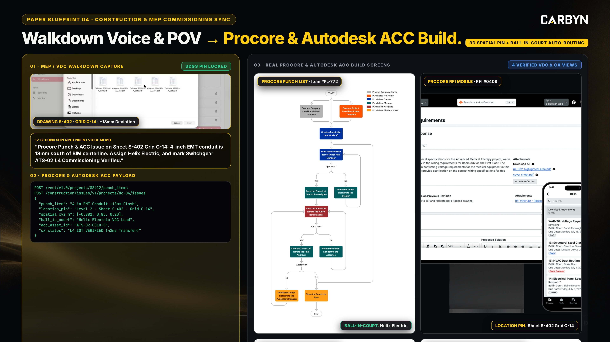
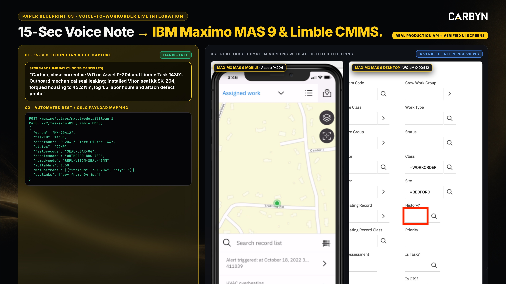
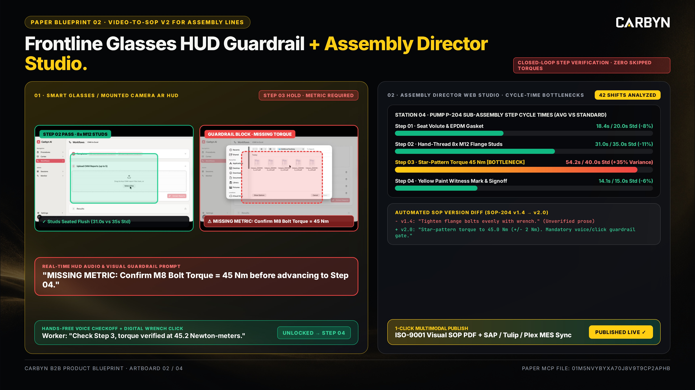
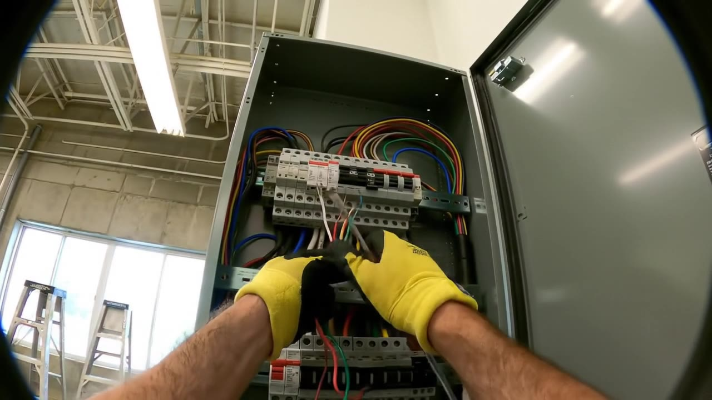

01 · CRO B2B GTM & ORIGAMI 10K ENGINE
1,140 Non-Overlapping Leads. 970 Tier-1 Verified.
01 · ORIGAMI 17-MAILBOX SENDING ENGINE (DRAFT LOCKED)
10,200
Emails/Mo · 2,550/Wk · 510/Day (17 × 30/d)
• Zero Send Lock Active: Staged in Origami Table
• 0.0% Bay Area Overlap: Hard-deduplicated against all 386 Bay Area leads (356 Industrial + 30 Higher-Ed).
• No Mail-Merge Tokens: pain-driven, conversational hooks (≤65w).
4cdd9784 (0 emails sent until JK final sign-off).• 0.0% Bay Area Overlap: Hard-deduplicated against all 386 Bay Area leads (356 Industrial + 30 Higher-Ed).
• No Mail-Merge Tokens: pain-driven, conversational hooks (≤65w).

Procore + ACC Sync
Maximo + Limble Sync02 · DOMAIN PROTECTION & TIER SEPARATION
970
Tier 1 Verified Ready + 170 Quarantined
• Tier 1 (970 Leads · 85.1%): Verified via Findymail, Origami Work Email, and verified corporate directories -> Ready for Wave 1.
• Tier 2 (170 Leads · 14.9%): Pattern-inferred candidates -> Quarantined from initial send until SMTP-verified to keep bounce <2%.
• Tier 2 (170 Leads · 14.9%): Pattern-inferred candidates -> Quarantined from initial send until SMTP-verified to keep bounce <2%.

Assembly SOP v2
Robotics POV Pipeline03 · 3 CORE PILLARS × 6 SUB-PERSONAS (1,140 LEADS)
375 / 380 / 385
Big Construction · MEP/DC Cx · Assembly Mfg
1. Big Construction (375): Jacobs, DPR, Turner, Mortenson, Whiting-Turner, Holder, McCarthy (175 Digital Twin/VDC + 200 MEP/Cx Mgmt).
2. MEP Subcon & DC Cx (380): 200 Data Center Cx + 180 MEP Superintendents & QA/QC Inspectors.
3. NA Assembly Mfg (385): 185 Enterprise AI/Innovation + 200 Mid-Market Plant/Ops Managers.
2. MEP Subcon & DC Cx (380): 200 Data Center Cx + 180 MEP Superintendents & QA/QC Inspectors.
3. NA Assembly Mfg (385): 185 Enterprise AI/Innovation + 200 Mid-Market Plant/Ops Managers.
CARBYN · COMMAND CENTER | MASTER SHEET ↗ | ORIGAMI TABLE ↗
01 / 06